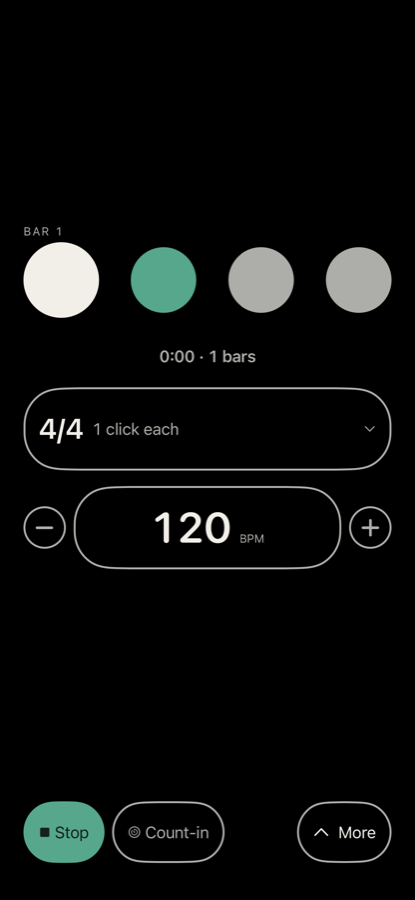
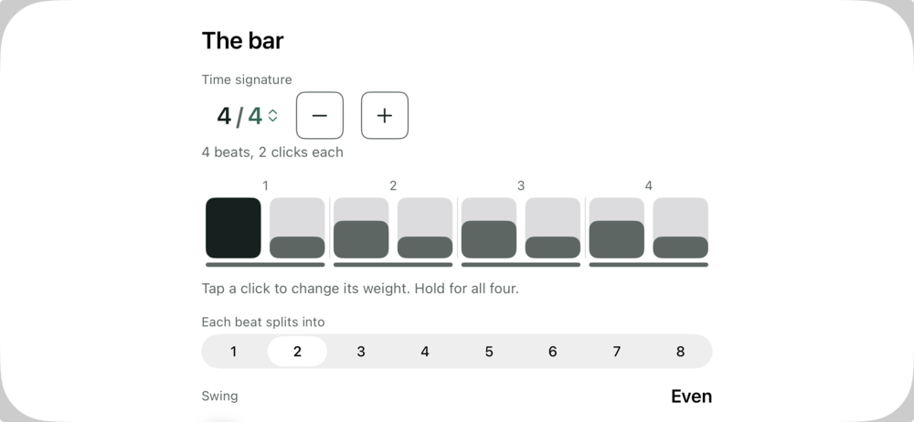
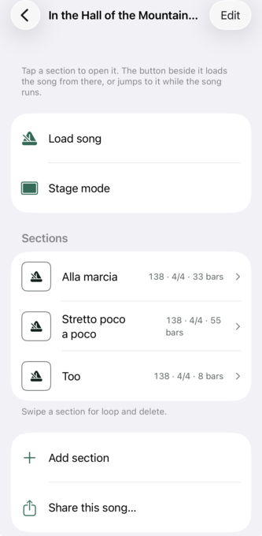
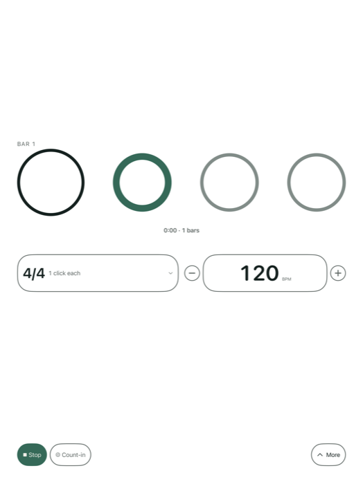
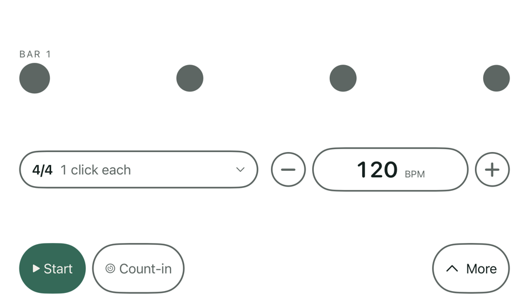
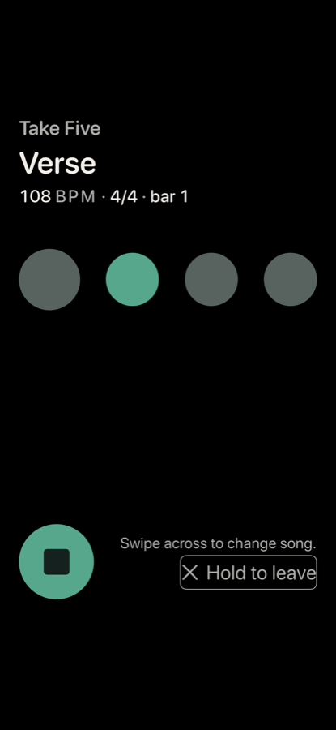

A metronome that handles compound and additive metres correctly, and remembers the songs, sets and routines you practise. Everything works offline. Nothing is collected.

20 to 500 BPM, and time signatures from 1 to 32 over 1, 2, 4, 8, 16 or 32. Compound metres are counted the way you count them: 6/8 is two dotted-quarter pulses, not six eighths. Additive metres are written the way you say them, 3+2+2, and the click marks each group, not only the bar line.
Divide the beat by anything from two to eight, swing the eighths as far as you want them to lean, and tap any click in the bar to change its weight.

The bar · every click in it, and what it splits intoA polyrhythm spreads each layer across the same bar. A polymeter counts a bar of its own length until the two come round together, which is the point at which you can hear how long “together” actually is.
Silence: the click stops for the bars you choose and keeps counting, so you find out whether you are still with it when it comes back. Dropped clicks are left out at random, and everything you do hear is exactly in time. Off the beat moves the click to a subdivision, so you place the beat yourself.
Speed up or slow down over bars, repetitions or seconds, on three curves, with an optional drop back after each rise. A session timer starts with the click, and a log records what you practised and at what tempo — on this device, and nowhere else.
Five click sounds. Each kind of click — accent, normal, soft, and the clicks between the beats — has its own sound, pitch and level. Import your own short WAV, AIFF or M4A, and remove it again. Rhythm plays through the silent switch and mixes with a backing track.

A song is an ordered list of sections, each with its own bar, tempo and repeats, and a tempo that can move across a section. A setlist plays songs and presets in the order you arrange them. A routine plays your presets one after another, for as long as you set, with rests between them.
Save any setup as a preset — the tempo, the bar, the weights, the sounds and any exercise, exactly as they are. There is no limit, and they file into folders.
iPhone and iPad, portrait and landscape, each with a layout of its own rather than the phone's stretched. Rhythm follows the system appearance, light or dark.

iPad · light · ringed marks
iPhone · landscape · at a large text size
Stage mode is a full screen for performing: the beat drawn large enough to read from a monitor position, with the song and section you are on, and your notes. It is tap-locked, it holds the screen awake, it can raise the brightness, and it can stop at the end of the piece.
A hardware keyboard or a Bluetooth foot pedal can start, stop and move the tempo, and every key is remappable. There is an output offset for Bluetooth, which iOS does not correct on its own.
On iPhone the beat can be a tap you can feel, alongside the sound or instead of it, which makes Rhythm usable by Deaf and hard-of-hearing musicians. It needs an iPhone 8 or later. iOS switches haptics off whenever Rhythm is not the app in front, so a felt session is a screen-on session, and Rhythm holds the screen awake while it delivers the beat.
Every control is labelled for VoiceOver, and at the accessibility text sizes the layout reflows rather than truncating — the transport stays where it is.
There is no subscription and no recurring charge. There is no advertising. There is no account, and nothing here asks who you are. Rhythm collects no data: no analytics, no tracking, and no code from anyone else.
There is no network code in Rhythm at all, which is why it works with the network off and asks for no permission when you open it. Your library, your practice log and the sounds you import stay on this device.
Privacy policy →Help lives inside the app: there is a quick start on the first screen, and nothing here needs a web page to learn. If something is wrong — or a metre is counted in a way you do not recognise — write to me, and say which device you are on and which version you have. The version is at the bottom of Settings, under About.
geoff@zorched.net